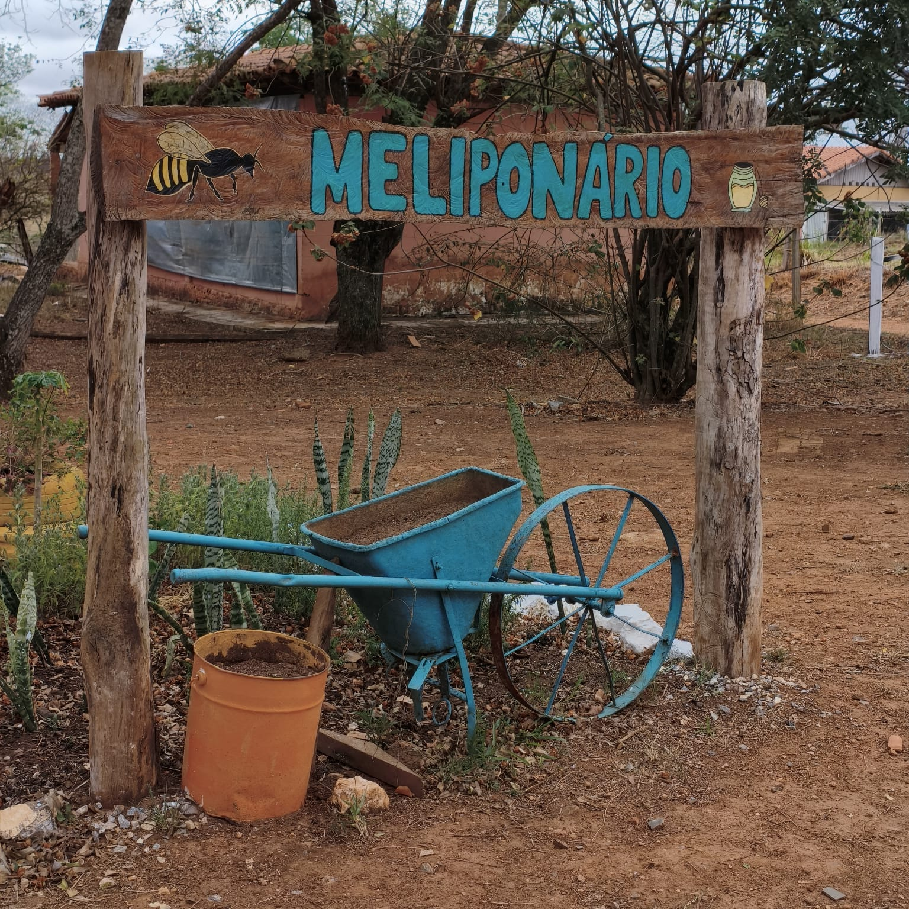
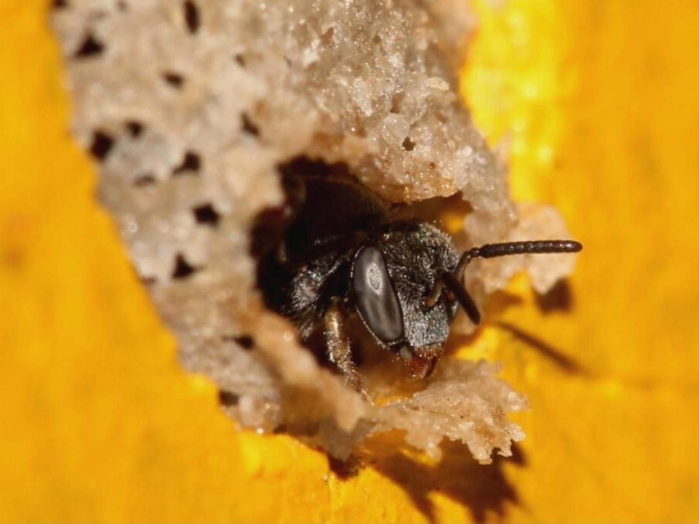
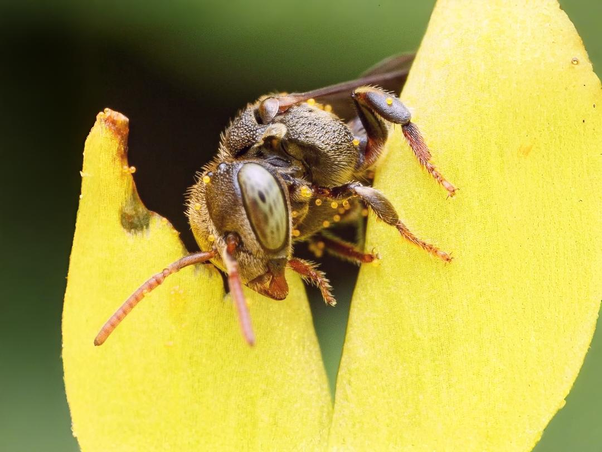
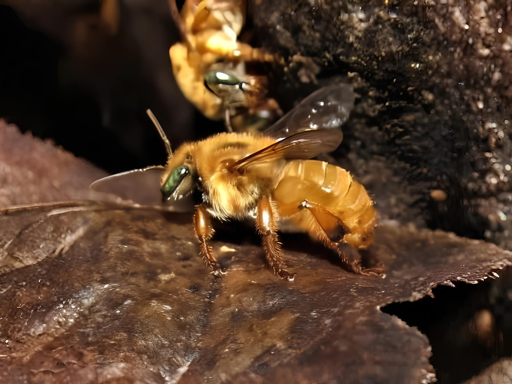

MeliTech
Gestão e Monitoramento Inteligente do Meliponário Escolar
Sobre o Projeto:
A meliponicultura tem se destacado como uma prática sustentável, educativa e relevante para a conservação da biodiversidade. Pensando nisso, o presente projeto visa unir a área técnica do Agronegócio com a inovação tecnológica da Informática, por meio da criação de um sistema web capaz de gerenciar, monitorar e divulgar dados do meliponário escolar. O projeto será composto por dois módulos principais: o MeliGestor, focado na gestão pedagógica e técnica do meliponário, e o MeliSensores, que permitirá o monitoramento remoto dos parâmetros ambientais das colmeias.
A união entre práticas agropecuárias e ferramentas tecnológicas representa um avanço significativo no contexto educacional e científico. O projeto permitirá o acompanhamento em tempo real das colmeias, promovendo ações preventivas na sanidade das abelhas e enriquecendo o processo pedagógico com dados reais e atualizados. Além disso, a criação de uma plataforma online possibilitará o acesso remoto a informações, incentivando a pesquisa e a troca de experiências entre diferentes instituições educacionais.

Monitoranento em Tempo Real
Dados Imediatos para a Saúde e Crescimento do Enxame.
Proteção de Abelhas Nativas
Inovação e Ciência para a Defesa da Polinização Local.
Futuro Sustentável
Contribuindo para a Segurança Alimentar e a Biodiversidade Global.
Painel - Abelha Jataí
Monitoramento em tempo real.
Sensores Internos
Dados de Temperatura, Umidade e Vibração para a Saúde e Crescimento da Colmeia.
Temperatura
Umidade
Vibração
Sensores Externos
Coleta de Dados Ambientais Cruciais para Avaliar as Condições de Forrageio e Segurança.
Temperatura
Umidade
Mapa dos Meliponários
Explore no mapa a localização de criadores de abelhas parceiros da Etec, desde meliponários até caixas de abelhas de criadores amadores.
Clique nos pontos para mais informações.
Espécies
O meliponário da Etec Edson Galvão preserva espécies de abelhas nativas, em caixas de manejo e em ninhos naturais mapeados no campus.

Jataí
Tetragonisca angustula
Pequena e dócil, espalhada por todo o Brasil, é muito valorizada na meliponicultura pelo mel suave e medicinal.

Mandaçaia
Melipona quadrifasciata
Com suas listras douradas inconfundíveis, é uma das abelhas nativas mais criadas, produtivas e apreciadas pelo mel encorpado.

Mirim-Guaçu
Plebeia Remota
Delicada e resistente, forma colônias numerosas que se adaptam bem a diferentes ambientes.

Mirim-Preguiça
Friesella schrottkyi
Minúscula e tímida, é uma das menores abelhas sem ferrão do Brasil, mas essencial para a polinização.

Borá
Tetragona clavipes
Ágil e vigorosa, produz um mel raro e de sabor marcante, encontrado em várias regiões brasileiras.

Iraí
Nannotrigona testaceicornis
Adaptável e produtiva, está presente em áreas urbanas e rurais, sendo grande aliada da biodiversidade.

Bugia
Melipona rufiventris
Robusta e imponente, guarda um mel de sabor intenso, tradicionalmente apreciado em diversas culturas.